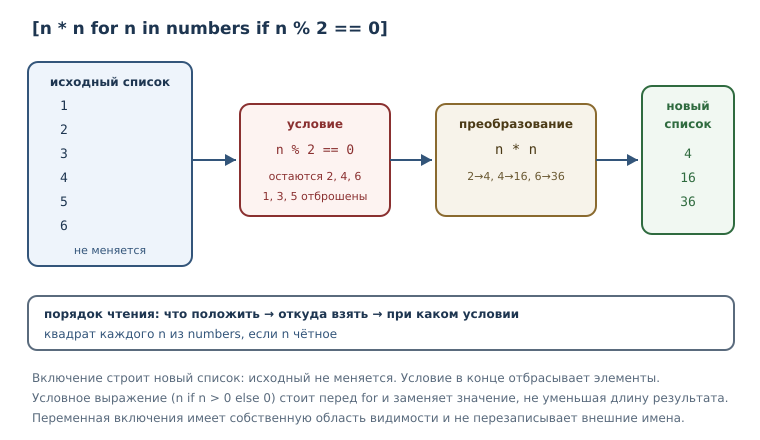
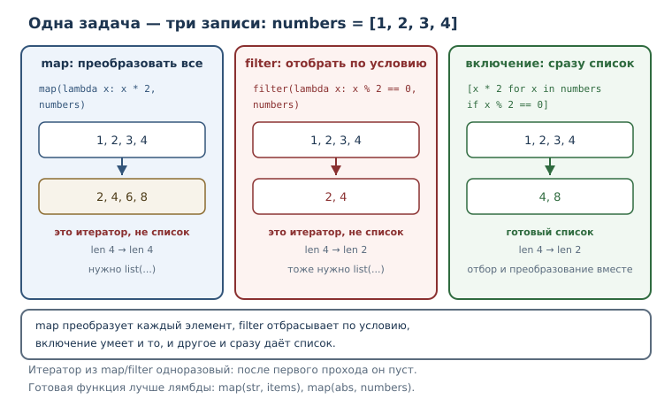

Функциональные приёмы и включения
Включения, лямбда-выражения, map/filter, сортировка по ключу и чистые функции: как выражать преобразования коротко и предсказуемо.
В этой главе
В предыдущей главе функции стали объектами: их можно передавать, возвращать и оборачивать. Теперь пора применить эту идею к повседневным задачам обработки коллекций. Очень часто программа делает одно и то же: берёт элементы, преобразует каждый, отбрасывает лишние и складывает результат в новую коллекцию. Записывать это циклом с накоплением — правильно, но многословно. Python предлагает более короткие и выразительные формы: включения, лямбда-выражения, map и filter, сортировку по ключу.
Смысл этих приёмов не в том, чтобы писать меньше символов, а в том, чтобы намерение читалось сразу: «взять квадраты всех чётных чисел» лучше выражать одним выражением, чем пятью строками цикла. При этом у краткости есть предел: когда выражение перестаёт быть понятным, его место занимает обычный цикл. Умение вовремя вернуться к циклу — такая же часть мастерства, как умение записать преобразование одной строкой.
23.1 Что вы сможете после этой главы
- строить списки, словари и множества включениями с условиями;
- писать короткие лямбда-выражения и понимать их ограничения;
- применять
mapиfilterи объяснять, чем они отличаются от включений; - сортировать по вычисляемому ключу, в том числе по нескольким признакам;
- отличать чистые функции от функций с побочными эффектами.
Всё, что показано в главе, исполняется и проверяется автоматически, поэтому примеры можно запускать и сверять вывод. Особенно полезно менять условия и смотреть, как меняется результат: так включения и ключи сортировки запоминаются быстрее, чем при чтении.
23.2 Списковое включение
Списковое включение — компактное выражение, строящее новый список из итерируемого объекта, возможно с условием. Запись состоит из трёх частей: что положить в результат, откуда брать элементы и при каком условии.
squares = [n * n for n in range(5)]
print(squares)
[0, 1, 4, 9, 16]
Читается так: «для каждого n из range(5) положить n * n в список».
Переменная n существует только внутри включения; после него она не
создаётся (в отличие от обычного цикла, где имя остаётся в области видимости).
Условие после if отбрасывает ненужные элементы.
numbers = [3, -1, 4, -2, 5]
positive = [n for n in numbers if n > 0]
print(positive)
[3, 4, 5]
Можно преобразовывать элементы и одновременно фильтровать; можно собирать строки и вызывать методы.
Условие в конце включения отбрасывает элементы. А если нужно не отбросить, а
заменить значение, применяют условное выражение перед for. Разница видна по
результату: в первом случае длина списка уменьшается, во втором — нет.
numbers = [3, -1, 4]
clamped = [n if n > 0 else 0 for n in numbers]
print(clamped)
print([n for n in numbers if n > 0])
[3, 0, 4]
[3, 4]
[n if n > 0 else 0 for n in numbers] читается как «для каждого n положить
n, если оно положительное, иначе 0». Это условное выражение, знакомое по
главе об управлении потоком, а не фильтр.
names = ["анна", "борис"]
capitalized = [name.capitalize() for name in names]
print(capitalized)
['Анна', 'Борис']
Включение умеет обходить несколько коллекций сразу — так получается «склейка» вложенных списков.
matrix = [[1, 2], [3, 4]]
flat = [n for row in matrix for n in row]
print(flat)
[1, 2, 3, 4]
Читается слева направо: сначала for row in matrix, затем for n in row.
Порядок важен: если поменять части местами, получится ошибка или не тот
результат.
Переменная включения живёт в собственной области видимости и не перезаписывает внешнюю. Это отличает включение от обычного цикла, где имя остаётся после завершения.
n = 100
squares = [n * n for n in range(3)]
print(squares)
print(n)
[0, 1, 4]
100
После включения n по-прежнему равно 100: внутри работала своя n. Такая
изоляция — ещё одна причина предпочитать включение: оно не оставляет
«случайных» имён в окружающем коде.
Сравним включение с эквивалентным циклом.
squares = []
for n in range(5):
squares.append(n * n)
Оба варианта дают [0, 1, 4, 9, 16]. Включение короче и прямо говорит, что
строится новый список. Цикл уместнее, когда внутри нужно несколько действий,
обработка ошибок или ранний выход.

23.3 Словарное и множественное включения
Включения строят не только списки. Словарное включение — выражение вида
{k: v for ...}, строящее словарь. Включение множества — выражение вида
{x for ...}, строящее множество.
prices = {"яблоко": 90, "банан": 120}
expensive = {name: price for name, price in prices.items() if price > 100}
print(expensive)
{'банан': 120}
Словарное включение удобно для «переворота» словаря и для построения нового словаря с вычисленными значениями.
original = {"a": 1, "b": 2}
inverted = {value: key for key, value in original.items()}
print(inverted)
{1: 'a', 2: 'b'}
Если два ключа совпадут, в словаре останется последнее значение — как при обычном присваивании по ключу. Это важно помнить при «перевороте»: значения должны быть уникальными, иначе часть сведений потеряется.
Множественное включение применяют, когда нужны уникальные значения.
words = ["кот", "пёс", "кот"]
lengths = {len(word) for word in words}
print(lengths)
{3}
Все слова трёхбуквенные, поэтому во множестве остался один элемент. Круглых скобок у множественного включения нет, а фигурные скобки без двоеточия означают именно множество, не словарь.
23.4 Лямбда-выражение
Лямбда-выражение — анонимная функция из одного выражения; оно уместно для коротких коллбэков и ключей сортировки. Название пришло из математической логики, но в Python это просто компактная функция без имени.
double = lambda x: x * 2
print(double(5))
print(type(double).__name__)
10
function
Слева от двоеточия — параметры, справа — выражение, которое вычисляется и
возвращается. Лямбда может принимать несколько аргументов и значения по
умолчанию, но не может содержать инструкции: присваивание, if-инструкцию,
return, yield внутри неё не записать.
Лямбда может принимать значения по умолчанию — так же, как обычная функция.
double = lambda value, factor=2: value * factor
print(double(5), double(5, 3))
10 15
Ключевое ограничение лямбды — выразительность. Как только логика требует нескольких шагов, обычная функция с именем читается лучше.
def is_long_name(name):
return len(name) > 4
Такая функция объясняет себя названием, и её можно переиспользовать. Лямбду
пишут там, где функция нужна один раз и её смысл очевиден из контекста:
например, в аргументе key при сортировке.
23.5 map и filter
До появления включений обработку коллекций выражали двумя функциями высшего порядка. map — функция, применяющая функцию к каждому элементу итерируемого объекта и возвращающая итератор. filter — функция, оставляющая элементы, для которых предикат истинен, и возвращающая итератор.
numbers = [1, 2, 3]
doubled = map(lambda x: x * 2, numbers)
print(type(doubled).__name__)
print(list(doubled))
print(list(doubled))
map
[2, 4, 6]
[]
Обратите внимание на две вещи. map возвращает не список, а итератор — вы
уже знаете, что он одноразовый, поэтому второй list пуст. И map принимает
функцию первым аргументом: это функция высшего порядка, как в прошлой главе.
numbers = [0, 1, 2, 3, 4]
evens = filter(lambda x: x % 2 == 0, numbers)
print(type(evens).__name__)
print(list(evens))
filter
[0, 2, 4]
filter оставляет элементы, для которых функция вернула истинное значение.
Если передать None вместо функции, останутся все элементы, истинные по
своему значению.
print(list(map(str, [1, 2])))
print(list(filter(None, [0, 1, "", "а", None])))
['1', '2']
[1, 'а']
Для большинства задач включение читается лучше, чем map с лямбдой.
numbers = [1, 2, 3]
print([x * 2 for x in numbers])
print(list(map(lambda x: x * 2, numbers)))
[2, 4, 6]
[2, 4, 6]
Результат одинаковый, но первая строка короче и не требует разбирать порядок
аргументов. map и filter уместны, когда функция уже существует и её не
нужно оборачивать: например, map(str, items) или filter(bool, items).
Когда же логика задана лямбдой, включение почти всегда яснее.

23.6 Сортировка по ключу
Ключ сортировки — функция, вычисляющая значение для сравнения элементов при сортировке. Сортировка сравнивает не сами элементы, а результаты ключа: это позволяет упорядочивать объекты по любому признаку, не меняя их.
words = ["груша", "яблоко", "слива"]
print(sorted(words, key=len))
print(sorted(words, key=lambda w: w[-1]))
['груша', 'слива', 'яблоко']
['груша', 'слива', 'яблоко']
В первом случае ключ — длина слова; во втором — последняя буква. Если ключи
совпадают, сохраняется исходный порядок элементов: сортировка в Python
устойчивая. В примере груша и слива одинаковой длины, и груша осталась
первой, потому что стояла раньше.
key может быть готовой функцией, если она уже делает то, что нужно.
Сортировка строк по умолчанию сравнивает коды символов, поэтому заглавные
буквы идут раньше строчных. Приведение к нижнему регистру даёт другой,
«человеческий» порядок.
names = ["Анна", "борис", "Вера"]
print(sorted(names))
print(sorted(names, key=str.lower))
['Анна', 'Вера', 'борис']
['Анна', 'борис', 'Вера']
key работает и у метода списка sort, который сортирует на месте.
numbers = [5, 1, 4]
numbers.sort(reverse=True)
print(numbers)
[5, 4, 1]
Ключ может быть и готовой функцией, и лямбдой. Для нескольких признаков возвращают кортеж: сортировка сравнивает сначала первый элемент, затем второй.
records = [("Анна", 92), ("Борис", 78), ("Вера", 92)]
by_score_desc = sorted(records, key=lambda item: (-item[1], item[0]))
print(by_score_desc)
[('Анна', 92), ('Вера', 92), ('Борис', 78)]
Минус перед баллом меняет порядок на убывание, а имя упорядочивает записи с одинаковым баллом. Такой приём — стандартный способ задать «сортировать по убыванию балла, при равенстве — по возрастанию имени».
Устойчивость сортировки стоит увидеть отдельно: элементы с одинаковым ключом сохраняют исходный порядок. Благодаря этому сортировку можно применять несколько раз — сначала по второстепенному признаку, затем по главному.
records = [("Анна", 92), ("Борис", 78), ("Вера", 92), ("Глеб", 78)]
print(sorted(records, key=lambda item: item[1]))
[('Борис', 78), ('Глеб', 78), ('Анна', 92), ('Вера', 92)]
Борис и Глеб получили одинаковый балл и остались в том порядке, в котором стояли в исходном списке. Без устойчивости результат зависел бы от деталей алгоритма, и поведение программы было бы трудно предсказать.
23.7 Чистые функции
Чистая функция — функция, чей результат зависит только от аргументов и которая не изменяет внешнее состояние. У неё два свойства: одинаковые аргументы всегда дают одинаковый результат, и вызов не оставляет следов — не меняет аргументы, не пишет в файл, не печатает.
def add_item(items, item):
return items + [item]
def add_in_place(items, item):
items.append(item)
return items
data = [1, 2]
print(add_item(data, 3))
print(data)
print(add_in_place(data, 3))
print(data)
[1, 2, 3]
[1, 2]
[1, 2, 3]
[1, 2, 3]
add_item чистая: она возвращает новый список и не трогает исходный.
add_in_place меняет аргумент — это побочный эффект, о котором вы читали в
главе о ссылках. Обе функции могут быть полезны, но чистая предсказуемее:
вызывающий код не должен помнить, что произошло с его списком.
Чистота — это про предсказуемость, а не про запрет на изменения. Чистая функция может вызывать другие чистые функции и заводить локальные переменные; ей нельзя лишь зависеть от внешнего изменяемого состояния — например, от глобального списка, который в другом месте программы кто-то дополняет. Если результат зависит от такого списка, одинаковый вызов может дать разный ответ.
Чистые функции хорошо сочетаются с включениями и map: каждая операция
преобразует значение, не меняя вход. Из таких операций удобно собирать
конвейеры обработки и легко писать тесты — результат зависит только от
аргументов.
Побочные эффекты не запрещены: программа обязана печатать, писать файлы и менять состояние. Правило другое — их место должно быть очевидным. Функция обработки данных лучше остаётся чистой, а запись результата выполняет отдельный шаг. Тогда преобразование можно проверить отдельно от ввода-вывода, а ошибку в расчёте не приходится искать среди файловых операций.
map умеет принимать несколько коллекций сразу, если функция ждёт несколько
аргументов.
print(list(map(lambda a, b: a + b, [1, 2], [10, 20])))
[11, 22]
Такая форма полезна, когда нужно попарно объединить две последовательности
одинаковой длины. Если длины разные, map остановится на самой короткой, и
это стоит проверять явно, если полнота данных важна.
23.8 Типичные ошибки
- Включение ради включения. Если нужно просто скопировать список,
[x for x in items]заменяется наlist(items). - Побочные эффекты внутри включения. Печать, запись в файл или изменение другого списка внутри включения делают код неочевидным; для действий с эффектами нужен обычный цикл.
- Слишком сложная лямбда. Лямбда из длинного выражения с несколькими условиями нечитаема; дайте функции имя.
- Забыть про итератор.
mapиfilterвозвращают итератор: его нельзя перебрать дважды, а при печати он показывает не значения. - Путать сортировку чисел и строк. Числа в строках сортируются
лексикографически:
"10"окажется раньше"9". - Потеря данных при перевороте словаря. Если значения не уникальны, часть пар исчезнет.
- Считать
sortиsortedодним и тем же.sortменяет список на месте и возвращаетNone;sortedвозвращает новый список.
Проверим вторую ловушку: включение с печатью выглядит как преобразование, но
его результат — список None, а настоящая работа — побочный эффект.
result = [print(x) for x in [1, 2]]
print(result)
1
2
[None, None]
Выражение print(x) возвращает None, поэтому в списке оказались два None.
Если нужен только вывод, пишите цикл; если нужно преобразование — возвращайте
значение.
23.9 Упражнения
1. Прогнозирование вывода
Не запуская код, запишите результат. Затем проверьте и объясните.
numbers = [1, 2, 3, 4]
result = [n * n for n in numbers if n % 2 == 0]
print(result)
print(numbers)
2. Первое включение
Для списка [5, 12, 7, 20] постройте включением список чисел, больших десяти.
Затем постройте второй список — их квадратов.
3. Словарное включение
Дан словарь цен. Постройте новый словарь, в котором цены увеличены на 10 %,
округлённые до целого (round). Выведите оба словаря, чтобы было видно, что
исходный не изменился.
4. Множественное включение
Дан список слов с повторами. Постройте множество первых букв этих слов и выведите его. Объясните, почему элементов меньше, чем слов.
5. Лямбда или def
Для каждой задачи выберите лямбду или обычную функцию и обоснуйте выбор:
- удвоить число в аргументе
key; - проверить, что пароль длиннее восьми символов и содержит цифру;
- взять последнюю букву слова для сортировки.
Для одного из случаев напишите код.
6. map и filter
Дан список чисел. Получите список их абсолютных значений через map и список
неотрицательных чисел через filter. Выведите оба результата и объясните,
почему к результатам применён list.
7. Включение вместо map
Перепишите выражение list(map(lambda x: x + 1, numbers)) включением.
Сравните читаемость и объясните, какой вариант предпочтительнее и почему.
8. Сортировка по двум признакам
Дан список пар «товар, цена». Отсортируйте его по цене по убыванию, а при равной цене — по названию по возрастанию. Объясните, зачем в ключе минус.
9. Мини-проект: отчёт по оценкам
Дан словарь «ученик → список оценок». Постройте:
- словарь средних оценок (округлённых до одного знака);
- список учеников, у которых средняя оценка выше четырёх;
- отсортированный по средней оценке список пар «ученик, средняя оценка».
Используйте включения, лямбду и сортировку по ключу.
10. Чистая функция
Напишите чистую функцию apply_discount(prices, percent), возвращающую новый
словарь с уменьшенными ценами. Докажите чистоту: вызовите её и покажите, что
исходный словарь не изменился. Затем напишите нечистый вариант и объясните
разницу.
23.10 Проверка понимания
- Из каких частей состоит списковое включение и в каком порядке они читаются?
- Чем словарное включение отличается от множественного по записи?
- Когда лямбда уместна и когда её стоит заменить обычной функцией?
- Что возвращают
mapиfilterи почему результат иногда оборачивают вlist? - Как отсортировать записи по убыванию одного признака и возрастанию другого?
- Чем чистая функция отличается от функции с побочным эффектом?
- Почему включение с
printвнутри даёт списокNone?
23.11 Что дальше
Практические ловушки функционального стиля и вопросы производительности разобраны в главах 50 и 52.
Вы научились коротко выражать преобразования коллекций и сортировать по вычисляемым признакам. Следующая глава — о гибких сигнатурах: как писать функции, принимающие произвольное число аргументов, и как передавать аргументы из готовых структур. Без этого не обходится ни одна универсальная обёртка и ни один декоратор для функций с разными параметрами.